01京东拟采购 300 万台机器人，两年先攒千万小时数据
300 万台机器人。这个数字从乌镇传出来，最容易读成一张巨额订单。
它不是订单。
11 月 4 日，乌镇。世界互联网大会的机器人与具身智能论坛上，京东集团技术委员会主席曹鹏给的说法是「未来五年，京东物流计划采购」。计划、五年、物流，三个限定词一个都不能省。
同一场演讲还有另一组数，更该盯。两年内累计采集超过 1000 万小时人类真实场景视频。机器人本体运行数据另算，目标超过 100 万小时。
一家公司准备买三百万台机器人，先公布的却是采集计划。这个先后次序，比采购金额更说明问题。
- 未来五年拟采购 300 万台机器人、100 万台无人车、10 万架无人机，均为计划
- 两年采集目标 1000 万小时人类视频加 100 万小时机器人本体数据，比例约 10 比 1
- 京东自述仿真评测与真机评测一致性约 90%，效率是真机的 3.2 倍
- 曹鹏判断商业机器人规模化还要 3 到 5 年，进家庭要 8 到 10 年
先把三个数拆开
采购清单是三行，不是一行。
| 品类 | 五年计划量 | 主要去向 || --- | --- | --- || 机器人 | 300 万台 | 仓储分拣、生产制造、线下零售、健康、产业园区 || 无人车 | 100 万台 | 运输配送 || 无人机 | 10 万架 | 运输配送与末端场景 |
300 万台是「计划采购」，不是已签合同。京东没有公布单价、供应商名单，也没有给出分年度交付节奏。
数字里还有个细节。300 万、100 万、10 万，量级逐级掉一档。这不像按热度摊出来的宣传配比，更像按场景成熟度排的序。仓内机器人最好落地，无人车次之，无人机受空域和法规约束最多。
不过这只是我的读法。官方没有就配比给解释。别急着当成结论。
为什么先攒的是数据
机器人要学抓取、摆放、搬运，光靠文本和视频网站上的人类动作远远不够。拿杯子用多大力？软包装衣服怎么捏？地面反光会不会骗过视觉？这些得从真实操作里学。
京东给的两年目标是 1000 万小时人类真实场景视频，加 100 万小时机器人本体运行数据。
麻烦在于怎么看这个 10 比 1。
人类视频好采。一线员工日常作业顺手就能录。机器人本体数据得先有机器人跑起来才有。所以这个比例未必是刻意的配方，也可能只是现阶段能拿到的东西本来就长这样。
先大量拿人类操作视频，再补本体数据，是条务实的路。但别把它读成技术上的最优比。
场景从哪来，京东列了家底。3800 多个仓库，超过 20 万家合作线下零售药房，超过 1 万家各类线下门店。家政侧还有超过 5 万名自运营保洁师。京东 AI 已用在零售、物流、健康、工业等超过 3000 个场景。目前具身数采覆盖 100 余个细分生产服务场景，采集超 10 万项真实作业任务。
从 10 万项到千万小时，中间隔的不是摄像头。是标注、清洗和合规。
那条闭环怎么转
据中国青年网与重庆日报的现场报道，京东云自研了 JoyEgoCam 一类采集终端。它记录视觉、手部姿态、力触觉信息。再走「采、存、标、训、评、仿、测」这套服务体系，把原始操作变成模型能学的数据。
然后有三件东西接上去。
JoyAI-Sim 是物理仿真引擎。它把人类操作数据、仿真环境和机器人评测连起来，支持数据扩增与策略验证。按京东披露，在已完成的测试里，仿真评测与真实评测的一致性约为 90%。评测效率是真机评测的 3.2 倍。
JoyAI-RA 是自研的具身操作基础模型。京东给的测试结论是，人类实操视频规模扩大后，模型真机任务得分稳步增长。
再加「采数据、训模型、验效果」的回路。验证结果反过来指导下一轮采集。曹鹏把这套归纳成「云、数、模、端、场、链」六个模块。
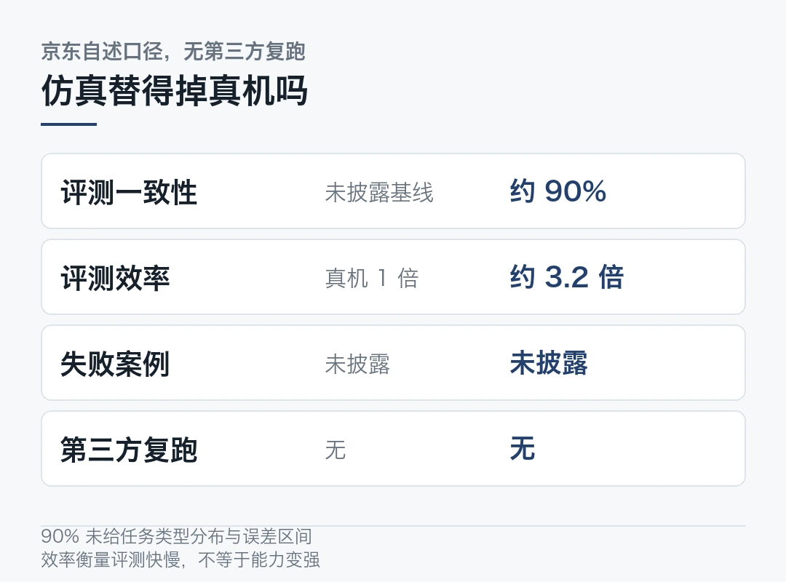
两盆冷水
一致性约 90%。听着很扎实。
注意一点，这是京东自己披露的测试结果。公开报道里没见到第三方复跑，也没给出评测任务的类型分布、失败案例和误差区间。
怎么理解这个数？如果评测集里多是结构化程度高的仓储动作，90% 不难看。换成开放环境下的长程任务，一致性大概率要掉。仿真能替掉的是重复跑真机的成本，替不掉真实世界里的意外。
倍率也一样。3.2 倍效率是个好数字，但它衡量的是「评测快了多少」。不是「机器人变能干了」。这两件事容易被顺手画等号。
仿真是省时间的工具，不是能力的证明。 把 90% 读成「仿真已经能替掉真机」，后面整套账都会算错。
第二盆冷水来自曹鹏自己。他接受媒体采访时说，「机器人大脑还在等待 GPT 时刻」。
他的拆分很直接。本体和小脑发展得快，打拳、跳舞、跑马拉松都很炫。大脑没这么快。长程任务理解、开放场景里的任务泛化，解决得并不好。
这句话把「300 万台」放回了合适的位置。采购是需求侧的表态。需求再确定，也换不来供给侧一夜之间的成熟。
据浙江日报报道，曹鹏给的时间表是商业机器人未来 3 到 5 年可能规模化部署。大规模进家庭需要 8 到 10 年。成本、安全和伦理问题要同步解决。五年采购计划，正好压在第一段判断里。
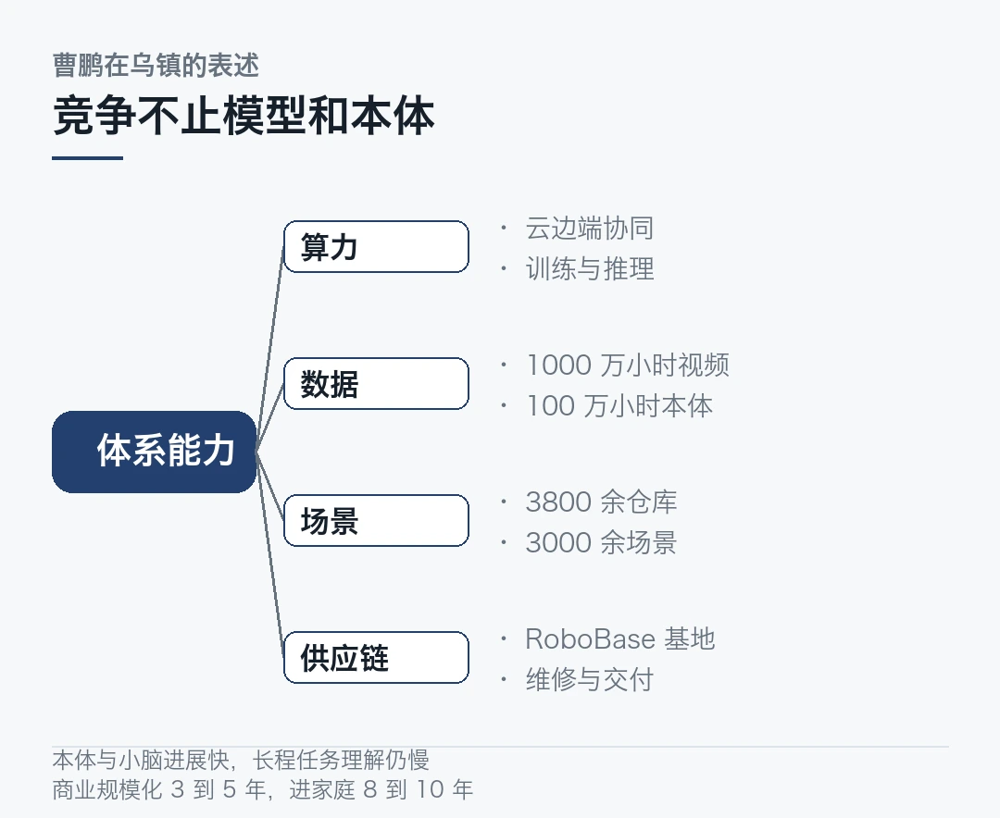
曹鹏反复讲的是体系能力。算力、数据、场景、供应链，四项凑齐才算数。京东「物理 AI 加速计划」第一阶段铺六个方向，数据、基地、制造、销售、物流、服务。确实不是只买机器人。
据腾讯新闻报道，京东计划五年内在全国布局 80 余个 RoboBase 机器人产业基地，首个广州基地已开工。首批开源数据集 EgoLive 已对外开放，覆盖 8 个国家的百所高校和科研机构。京东物流「狼族」机器人军团已在全国超 20 个省份、全球超 10 个国家部署。官方称一线作业效率提升近 20%。
这几项都是企业自述口径，规模与效果没有第三方核实。
该盯的是交付
需求侧拿着确定场景和确定预算去等供给成熟，这个逻辑成立。它比先造机器人再找客户，少了一整段试错。
但被考验的是未来两年。
1000 万小时视频采集涉及一线员工与家庭场景。合规怎么落地？数据怎么脱敏？报道里只有「严格依法依规」的原则表述，没有细则。仿真一致性 90% 在什么任务集上成立，也没展开。300 万台分摊到五年，每年的交付、运维、维修和残值，都还没有可核对的账。
再说一句更实在的。京东零售计划 2028 年前投入百亿资源助力 100 个机器人品牌。京东工业发起零部件产业发展联盟。这些动作指向的是把供给端拉起来。
能不能成，最后不看买了多少台。看机器人能不能在真实产线里连续干活、成本比人低、坏了有人修。
多数具身产品还停在能演示、难量产的阶段。这一点，曹鹏自己比谁都清楚。
---
300 万台是张期票。那 1000 万小时视频能不能变成可复用的操作能力，才是兑现日期。
本文信息来源
- 上海证券报·中国证券网 — 京东曹鹏：物理AI迈向规模化落地，竞争焦点转向算力、数据与场景（2026-11-04，官方演讲口径） · cnstock.com
- 杭州网 — 300万台机器人！世界互联网大会上，京东公布一项大计划（2026-11-04，官方披露数据） · ori.hangzhou.com.cn
- 每日经济新闻 — 腾讯混元Hy4正式版发布；京东未来5年采购300万台机器人（2026-11-04） · mrjjxw.com
- 中国青年网 — 京东披露具身智能数采进展，覆盖百余细分场景、采集超10万真实作业任务（2026-11-05） · d.youth.cn
- 重庆日报 — 京东打造具身智能数据采集中心，为AI持续供给真实操作数据（2026-11-04） · cqrb.cn
- 浙江日报 — 京东：以真实场景牵引技术落地和产业协同（2026-11-05） · zjrb.zjol.com.cn
- 南方+ — 京东曹鹏：机器人大脑还在等待GPT时刻（2026-11-04） · nfnews.com
- 腾讯新闻 — 五年300万台机器人，京东物理AI加速计划全面落地（2026-11-04） · new.qq.com
- 网经社 — 京东曹鹏：物理AI进入规模化落地期，未来五年计划采购300万台机器人（2026-11-04） · 100ec.cn
- 新华网 — 想象中的智能生活，正变得触手可及（2026-11-05） · news.cn
- ITBEAR — JD Logistics Deploys Agibot G2 Max in Zhi Lang Warehouse to Handle Pallet Breaking and Stacking（2026-10-27） · itbear.com
- Ai Robot Sight — Roughly 70% of Products Require Re-engineering: Embodied Intelligence Confronts Three Mountains on the Road to Industrialization（2026-11-05） · airobotsight.com
02claude-mem 给编码 agent 补记忆，11 万星仓库怎么装
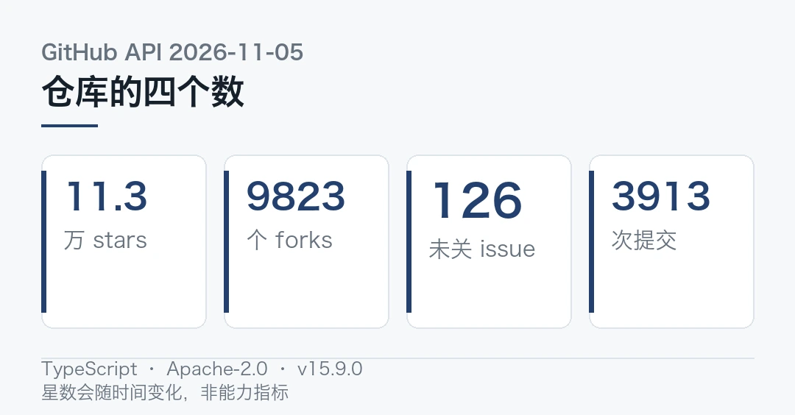
开个新会话，agent 把昨天改过的文件又读一遍。你提醒它上次说过别动那个模块，它礼貌地道歉，然后下周照旧。
这就是无状态。模型每次醒来都是第一天。
`thedotmack/claude-mem` 想补的就是这块。据仓库 README，它捕获 agent 会话期间的一切，用 AI 压缩。再把相关上下文注回后续会话。
上面四个数来自 GitHub API 在 11 月 5 日的返回。主语言 TypeScript，Apache-2.0 许可，最新 release 是 11 月 2 日的 v15.9.0。最近一次 push 就在 11 月 5 日。
这不是个躺在收藏夹里的 demo。
装起来是几行的事
```bash
# 从 README 抄的示意写法，不是我编的 APInpx claude-mem installnpx claude-mem install --provider gemini --ide cursornpx claude-mem repair # 插件更新后重装修复```
安装器会自动登记 hooks、拉起本地 worker。支持面铺得很宽。Claude Code、Codex、Gemini、Copilot、OpenCode、OpenClaw、Cursor、Windsurf 都在列。仓库文档还提到 Qoder、Grok Bot、T3 Code、DeepSeek Harness 这类集成。
参数里 `--provider` 挑模型，`--ide` 挑编辑器，`--no-auto-start` 可以关掉自启。默认压缩模型是 `claude-haiku-4-5-20251001`。
注意一点，我还没上手跑，光看 README 说不出它在真实项目里省了多少 token。下面讲的是架构，不是实测。
记忆是怎么进出会话的
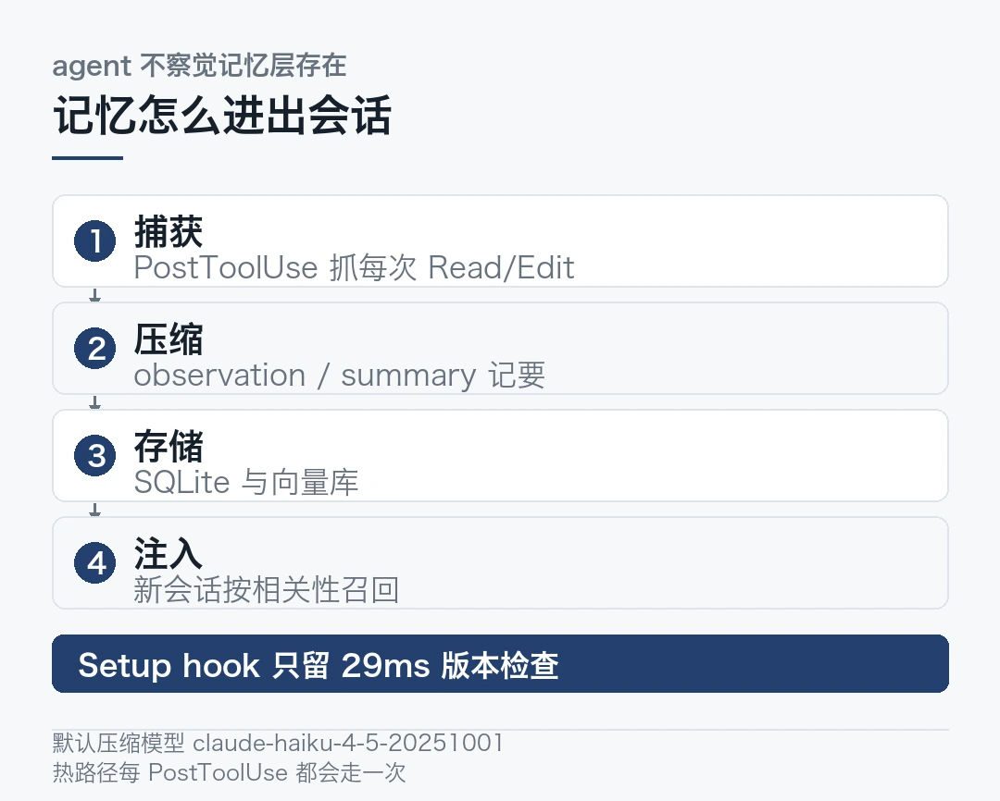
核心是个 PostToolUse hook。仓库提交记录里有句话很说明设计意图。这个 hook 已经抓到 agent 每一次 Read / Edit，agent 不该察觉记忆层的存在。
捕获之后走 AI 压缩，把会话拆成 observation、summary、prompt 几类记录，再落到 SQLite 和向量库。后续会话开始时，按相关性检索、注入上下文。搜索侧有 mem-search MCP、Chroma 检索策略和 SearchOrchestrator 分层编排。
Setup hook 现在只跑一个 29 毫秒的版本检查，不再干重活。SessionStart 也砍到只剩 worker 启动和上下文抓取两个 hook。热路径每 PostToolUse 都要走一次，把重活挪出去是必需的。
agent 的记忆层，难点从来不在存得下，在每次调用都别拖慢主线。
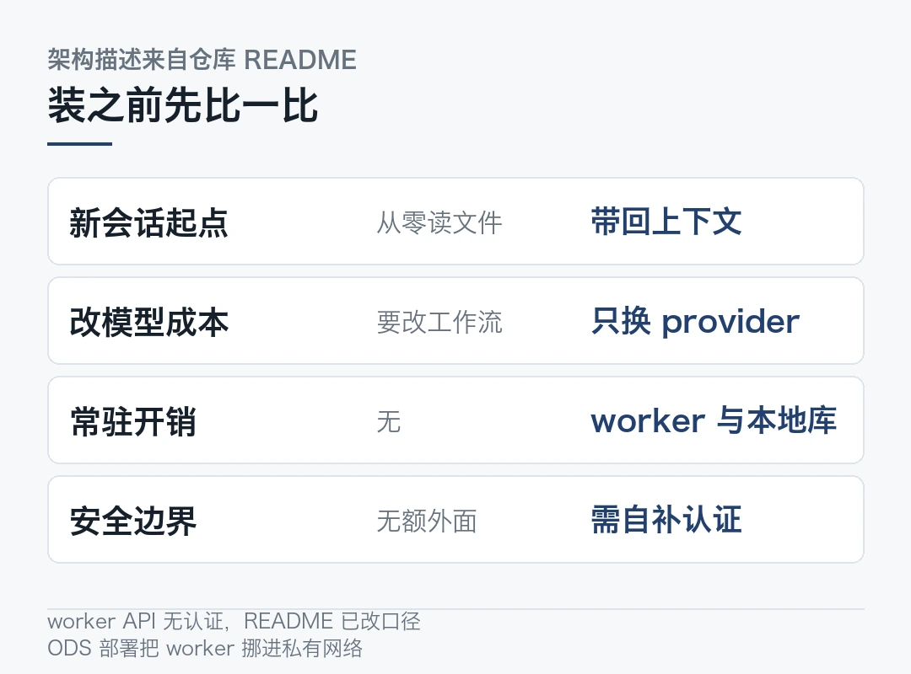
一个有分寸的设计
很多 agent 工具喜欢把能力塞进 prompt，让模型自己记得调用。claude-mem 走的是反方向。hook 在模型看不见的地方把活干了，模型醒来就自带上下文，不必再学一套新指令。换个模型也不用改工作流，仓库支持那么多 IDE 和 provider，靠的就是这层解耦。
这套解耦值不值得多养一套常驻服务？代价也清楚。你多了一个常驻进程、一份本地数据库、一套需要维护的 hook 生命周期。项目里 Node 20、Bun、Chroma、BullMQ 队列、Redis 兼容服务，这些词出现在文档里的时候，得先掂量自己的维护预算。
坑在哪，我读出来的几处
先说端口，这里有个细节容易漏。原来写死 37777，现在改成 `37700 + uid % 100` 的按用户公式，从 `~/.claude-mem/settings.json` 读 `CLAUDE_MEM_WORKER_PORT`。多人共机时最容易踩。
再说版本。Claude Code 的插件加载器会把 worker 锁在某个缓存版本上，光同步代码没用，得跑 `claude plugin update thedotmack/claude-mem`。官方专门加了 `npx claude-mem repair` 来处理更新后的恢复。
最该留意的是安全边界。仓库自己的提交说明里写着，worker API 没有认证。README 里「仅回环」的表述也改成了真实暴露情况。ODS 部署中，worker 已从共享网络挪到私有 Compose 网络，只留一个小网关对外。
一个能读写你全部会话历史的本地服务，默认没有认证，这件事得自己补上墙。 我如果装，会先确认它只绑 127.0.0.1，再看端口有没有暴露到容器网络里。
还有个诚实的限制。hooks 连不上云端 cmem.ai 时，召回可以改走 connector，但 `save_memory` 这类能力可能不提供。离线表现和在线不是一回事。
我准备怎么验
不测「能不能记住」，这太容易演。测三件更硬的事。
第一，隔一天开新会话，问一个只在上次出现过的文件路径和改名原因。看它能不能不靠我提示就答上来。
第二，拿一个三千文件以上的仓库，比一比开会话的前几轮延迟。看注入是不是把上下文撑爆了。
第三，故意改一条 CLAUDE.md 规则，看它注入的是新规则还是旧记忆。
第三件最要紧。记错的东西比没记住更麻烦。 旧上下文带着「上次就是这么定的」的语气混进来，比没有上下文更难查。
仓库里有 `all-sources` 与 source-policy 控制跨项目召回范围，也支持隐私排除标签和 redaction。这给了一个可行的验收口子。把敏感目录标掉，再确认它真的没进索引。
跑完出结果我再写一篇。先装只读模式，把那三条验收跑一遍。
本文信息来源
- GitHub Repository — thedotmack/claude-mem README and description（2026-11-05） · github.com
- GitHub API — thedotmack/claude-mem repository metadata and latest release（2026-11-05） · api.github.com
- DEV Community — Introducing dim: A Better Runtime and Body for Agents（2026-11-05） · dev.to
- FOSSY — Top 10 Open-Source Picks: November 5（2026-11-05） · fossy.dev
- SegmentFault — GitHub 热榜项目：日榜（2026-11-05）（2026-11-05） · segmentfault.com
- Top Open Source AI Projects — AI Agents & Automation ranking（2026-11-05） · topopensource.ai
- Undercode News — AgentCP Is Building a Unified Control Center for Claude Code and Codex Projects（2026-11-05） · undercodenews.com
- Hacker News Daily Digest — Qualcomm Cloud AI 100 Ultra and agent tooling roundup（2026-11-05） · github.com
03高通 6G 终端原型机进博会首次公开，下行带宽 400MHz
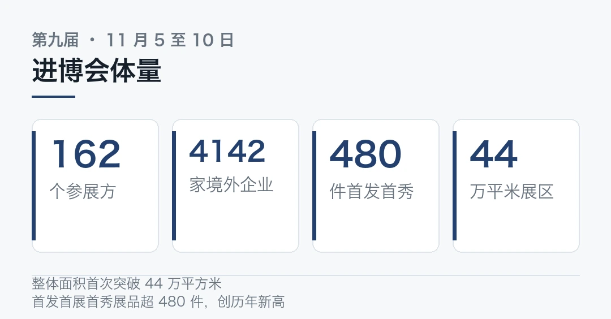
展台上那台设备，体量比普通手机大得多。它不通话，也不装 App。摆在那儿只为一件事，验证下一代通信标准能不能跑通。
11 月 5 日，第九届中国国际进口博览会在上海开幕。高通展台把 6G 终端原型机从实验室搬了出来。这是它在全球大型展会上的首次公开实物展出。
400 对 100，是这次最容易被记住的数。别急着读成「网速快四倍」。带宽和速率不是一回事。
它不是概念机，是测试台
据新华财经现场报道，高通中国市场部技术市场总监李永钢说，这台设备此前主要在实验室使用。这次是首次走出实验室公开展出。
关键在用途。它已用于和中国移动、中兴通讯等产业伙伴的联合 6G 技术测试与互操作验证。这是迈向商用过程中的测试验证平台。
互操作验证这个词值得停一下。原型机自己跑通不稀奇。不同厂商的设备按同一套规范对上话，才是标准落地前最费劲的一段。
李永钢给的路径很实在。从 5G 经验看，这类大型测试原型机最终会走向芯片化、产品化。眼前的铁盒子不会变成商品，它会缩成一颗芯片里的一个模块。
据财联社报道，高通中国区董事长孟樸把这条线串得更长。首届进博会展示 5G 原型机，后来与中国伙伴呈现 5G 商用成果。再到今天 AI 手机、AI PC、汽车等终端。
原型机、标准、芯片、整机，中间隔着好几年。
6G 真正改的不是速度
多数人对 6G 的想象停在「下载更快」。带宽上到毫米波甚至太兹，一部 90 分钟超高清电影不到一秒下完。这类描述确实好传播。
可中国移动在现场给出的方案里，速度只是底座，内涵是三个「一体」。
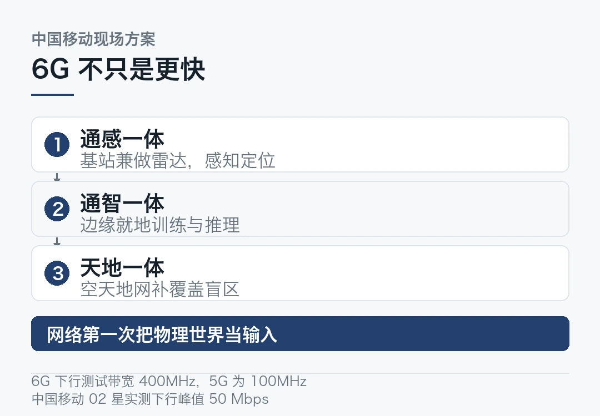
通感一体，基站兼做雷达。无线电波不只收发信号，还能感知周围环境、定位和追踪物体。交通流量监测、低空空域感知都能用上。
通智一体，网络自己长脑子。基站和终端就地采集、处理数据，甚至做分布式 AI 训练与推理。敏感数据不用回云端。
天地一体，把盲区补上。偏远山区、海洋、高空通过空天地一体化网络覆盖，灾害时也能保通信。中国移动今年发射的「中国移动 02 星」已验证手机直连卫星与非地面网络 NTN 协议。单用户下行峰值实测 50 Mbps。
全球移动通信系统协会董事长洪曜庄在新华社报道里给了句更干脆的概括。6G 和 5G 最大的不同是感知。未来网络不仅传输信息，还能实时感知物理空间中的物体，并借助 AI 自我诊断、自我修复。
从「传得更快」到「看得见」，这是通信网第一次把物理世界当作输入。
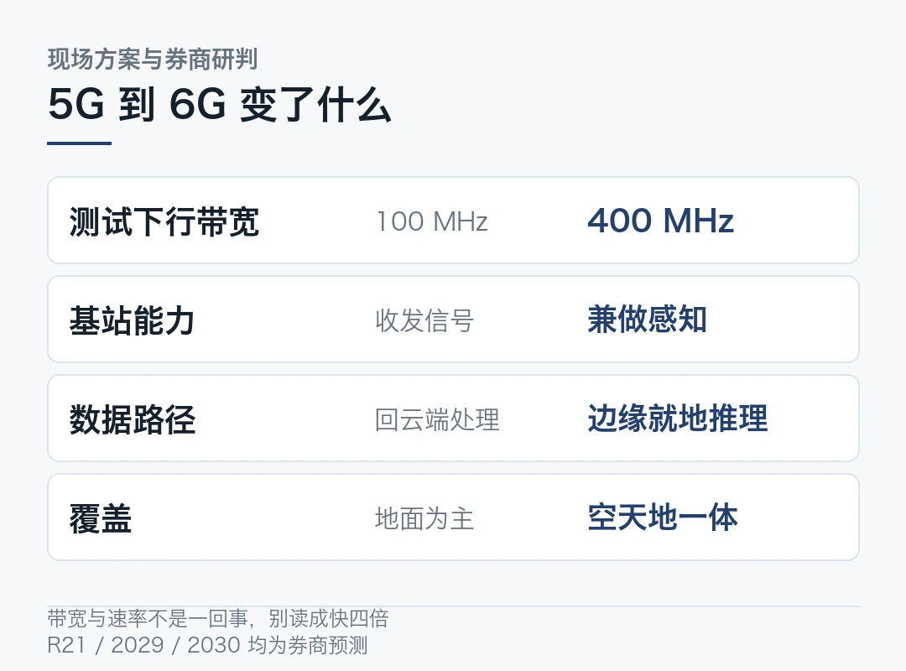
时间表得看清楚口径
那到底什么时候能用上？这里最容易写飘。
据财联社援引中信建投证券的研判，首个 6G 核心规范有望在 3GPP R21 版本完成。规模化网络建设最早 2029 年启动，2030 年左右商用。我国已完成第一阶段 6G 技术试验，并启动第二阶段系统验证。6GHz 频段试验许可已批复。
注意一点，这是券商预测，不是 3GPP 的官方日程。标准版本、建网时点、商用年份，三样都还可能变。
现场工作人员也说了，很多设备还没有开始量产。6G 目前处在从实验室走向试验场的阶段。离「走进生活」还差着一整轮标准冻结、芯片流片和终端验证。
一句话，展出的是测试平台，不是上市预告。
高通这周的另一条线
同一周，高通在数据中心侧也有一条动静。
Cloud AI 100 Ultra 的产品页被 Hacker News 顶了上来。150W 功耗、128GB 内存、548 GB/s 带宽，专门做推理。据 The Verge 报道，高通在第四财季财报里讲了扩数据中心业务的打算。背景是手机销量较 2025 年下滑约 20%，此前已宣布与亚马逊、Meta 等合作。
两件事摆一起看才有意思。一边把 6G 原型机搬进展会，一边用低功耗大内存卡切推理市场。指向的都是同一件事，通信和算力中间那层边界正在被重新划。
麻烦在于，150W / 128GB / 548 GB/s 这组数字是官方标称。公开资料里没见到真实 workload 的第三方复跑。能效比好不好，得等实际推理任务说话。
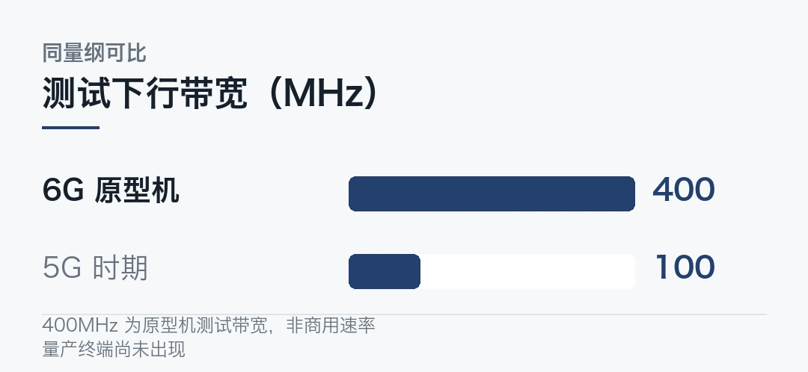
展台之外还有些什么
本届进博会 11 月 5 日至 10 日在上海国家会展中心举行。162 个国家、地区和国际组织参与，4142 家境外企业参展。整体面积首次突破 44 万平方米。全球首发、亚洲首展、中国首秀的代表性展品超过 480 件。
技术装备展区里还有几件硬货。SK 电讯的浸没式液冷方案首次在华公开展出，官方称制冷用电可降低 93%、整体用电削减约 37%。
英特尔带来基于 Intel 18A 制程的第三代酷睿 Ultra 与至强 6+ 处理器。后者最高 288 颗能效核、576 MB 三级缓存。
特斯拉那辆没有方向盘和踏板的赛博无人驾驶电动车，9 月 3 日在美国奥斯汀开始运营。30 天内投入服务车辆超过 300 辆。
这些数字都来自厂商展台口径。量级可参考，兑现程度另说。
展会负责把可能性摆出来，量产和成本负责把其中多数删掉。
---
400 MHz 会被后来的数字盖过去。基站第一次有了眼睛，这件事要重写的规矩多得多。
本文信息来源
- 新华财经 — 直击进博会：首展首秀集中亮相，全球硬科技汇聚进博会（2026-11-05，官方现场） · cnfin.com
- 财联社 — 第九届进博会明日启幕：6G、绿色智算、无人驾驶等前沿技术集中亮相（2026-11-04） · cls.cn
- 财联社 — 明日主题前瞻：高通 6G 终端原型机首次公开实物展出（2026-11-04） · cls.cn
- 新华网 — 想象中的智能生活，正变得触手可及（2026-11-05） · news.cn
- 新浪财经 — 6G长啥样？乌镇今年给了答案（2026-11-05） · finance.sina.com.cn
- Qualcomm — Cloud AI 100 Ultra product page（2026-11-04，官方） · qualcomm.com
- The Verge — Qualcomm is betting big on data centers as smartphone sales sink（2026-11-04） · theverge.com
- AI Trend Research — Qualcomm bets on AI data centers as smartphone sales fall about 20%（2026-11-05） · ai-trend.me
- Hacker News Daily Digest — Qualcomm Cloud AI 100 Ultra, 150W AI Accelerator Card（2026-11-05） · onlybits.org
04科技速览 15 条，系外行星成像、RNA 模型与进博会硬科技
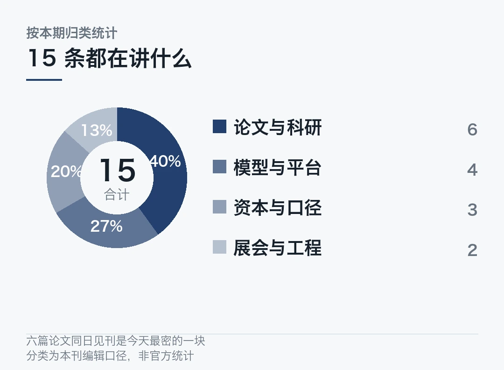
今天这份按时间读就行。凌晨是《自然》《科学》放论文。上午进博会开门。白天是模型权重和招股书。夜里开源社区还在更新。
每条都标了口径。厂商自述和第三方结论不混着写。
海外 · 系外行星成像灵敏度提到 2 到 15 倍
美国西北大学 Rodrigo Ferrer-Chavez 团队在《自然》发表 FLIP 框架。它用机器学习生成特定恒星的模拟眩光，再从直接成像观测里减掉。
团队用詹姆斯·韦布空间望远镜近红外相机数据测试，拿到 51 波江座 b 的首个影像。传统方法探不到它。作者自己列了两条限制，计算成本要降，还要用更大数据量验。
国内 · 中国科大开源 RNA 序列基础模型 structRFM
《自然》11 月 5 日刊出。周少华、熊鹏团队先构建约 2100 万条计算注释的序列-二级结构配对数据，再做预训练。
模型只输序列，就能出序列级、核苷酸级、核苷酸对级特征。零样本同源性分类、二级结构预测、剪接位点识别、非编码 RNA 分类都能接。
实验室已开放完整配对数据、模型权重和源代码。这在国内生物基础模型里不多见。
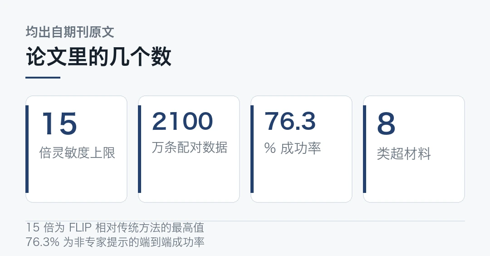
海外 · 石墨烯里的量子跃迁被实时追踪
德国雷根斯堡大学、马尔堡大学与于利希研究中心把激光和光电子动量显微镜接起来。看强光场下电子怎么在能带间穿越。
测到隧穿概率最高可达 100%，电子接近能隙的速度也明显影响跃迁。是《自然》新一期的论文。属于测量方法进展，离器件还远。
海外 · BAF 复合体缺失会改写三维染色质
威尔康奈尔医学院 Cem Meydan 团队在《自然》报告，BAF 染色质重塑复合体功能丧失，会增强绝缘蛋白 CTCF 的染色质结合。DNA 三维折叠跟着改变。
编码 BAF 组分的基因是癌症里最常见的突变之一。这条可能给一批突变提供统一的致病解释。机制研究，不是疗法。
海外 · 加利福尼亚湾裂谷可能由双俯冲驱动
捷克科学院 Guido M. Gianni 等在《科学》提出，800 万至 600 万年前该区域快速裂谷，与西太平洋双俯冲作用起始时间吻合。
三维地球动力学模型算出，俯冲重组可在太平洋板块上传递约 5 至 15 兆帕伸展应力。是解释模型。学界对大陆破裂机制本就有争议，别当定论。
海外 · 一句话生成可直接 3D 打印的超材料
早稻田大学 Xiaoyang Zheng 在 npj Metamaterials 发表 MetaGen-LLM。它把自由文本设计请求映射到 8 类超材料的连续 mesh 几何。
16000 个结构训练，20 名标注者写提示。非专家 200 条提示的端到端设计成功率 76.3%，专家提示对照 92.6%。
论文明确说，测试的外推只在已知结构族内。不证明对未见拓扑的泛化。
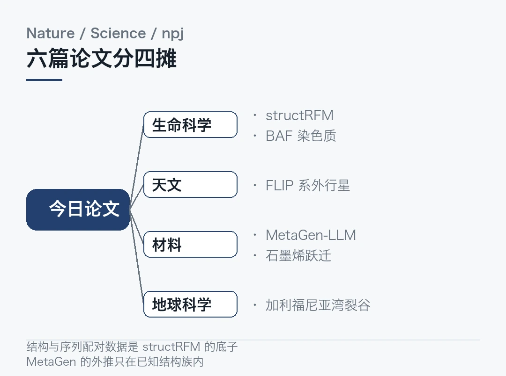
国内 · Kimi K3.1 Pro 完整权重开放
月之暗面按计划放出 K3.1 Pro 权重。2.8 万亿参数 MoE、百万 token 上下文，主打编程、3D 创作与复杂 agent 任务。
媒体转述其登顶 Agent Arena 开放权重模型榜首，这是第三方榜单口径，不是厂商自评。同日社区出现 kimi-k3-in-c，号称 8.24 GB 内存单 CPU 跑 2.78 万亿参数，C99 实现，星数已过万。
权重开放就等于人人跑得动？别只看参数。中间还隔着显存与带宽。
海外 · OpenAI 收购 Pierre Computer
据 Axios 与 36 氪转述，OpenAI 将把 Pierre 的代码存储能力并进 Codex。Pierre 的 Trees、Diffs 两个开源组件本来就在 Codex 里，用来翻文件和看改动。官方说开源项目继续保持开源。
交易金额未披露，仍需监管审批，完成前两家独立运营。AI 写代码越快，人审改动的量越大。审代码成了新瓶颈。
海外 · OpenAI 推送 Images 2.6
图像生成进入版本化迭代。版本号化说明调优已成常态，未必等于能力跃升。提示词一致性、风格控制和内容水印的工程成本倒是跟着涨。
这条来自当日 AIGC 简报汇编，细节以官方发布为准。
海外 · Anthropic 更新 S-1，算力承诺 8954 亿美元
据 Yahoo Finance 与钛媒体，Anthropic 11 月 2 日提交修订版招股书。第三季度营收 169.6 亿美元、同比增长 1127%，净亏损 232.9 亿美元。
累计采购与租赁承诺约 8954 亿美元，其中约 700 亿美元一年内到期。文件还披露公司目标 11 月 16 日当周上市，代码 ANT。
营收和算力两头都在涨。命门已经不在算法。
海外 · ChatGPT 搜索份额出现口径之争
据钛媒体汇编，OpenAI 消费者产品负责人称 ChatGPT 每周处理的搜索类查询已达谷歌的五分之一，周活 12 亿。
第三方 Ahrefs 按意图口径估的是约 12%。10 月流量监测里谷歌贡献 24.74% 追踪流量，ChatGPT 仅 0.36%。
差别在于「答案闭环」几乎不向外导流。查询量增长不等于广告收入增长。这两个口径别混用。
海外 · Anthropic 开源可证明推理系统 FlashProve
据 Hacker News 日报摘要，Anthropic 与合作者推出 FlashProve。它用 Lean 形式化语言对顶层安全保证做可审计验证，代码含 C++ 快速验证器与 Lean 验证器，Apache 2.0 协议。
列出的场景包括推理服务器篡改检测、文本溯源与合规模型审批。摘要转述，具体指标以论文为准。
海外 · Go 的 JSON v2 把 Unmarshal 拉快最多 10 倍
同一份摘要提到，新版支持调用者自定义任意类型的 JSON 表示，包括第三方类型。Marshal 性能与 v1 持平。Unmarshal 在部分基准里最高提升 10 倍，收益来自减少内存分配、去掉 v1 接口的冗余解析。
属于工程侧实打实的改进。
海外 · RTX Spark 在 Linux 上推理速度掉到 35%
摘要援引的测试称，MSI Prestige、Asus ProArt、Dell XPS 等 RTX Spark 平台双装 Linux 后，桌面与 4K 120Hz 都正常。但插电时 GPU 频率锁在约 780 MHz，Windows 下可达 2.2 GHz，原因是加密固件。
128 GB 统一内存的机器跑不动本该跑得动的推理。这类问题比参数表更影响实际选型。
国内 · 乌镇博览会与进博会同期收官
世界互联网大会「互联网之光」博览会 11 月 2 日至 5 日举行。54 个国家和地区、671 家企业与机构参展，展出 1000 余项新技术新产品。含端到端 6G 原型系统与通感算智融合试验装置。
上海进博会 11 月 5 日开幕。4142 家境外企业参展，首发首展首秀超 480 件。两个展的数字都来自主办方与现场报道。
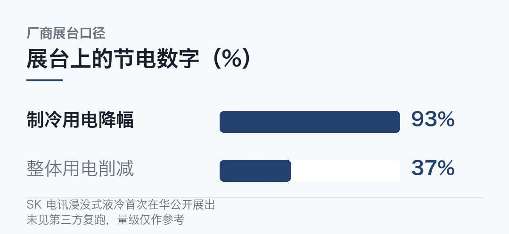
涉及营收、算力承诺与上市计划的内容仅作事实转述，不构成投资建议。素材检索中出现的代工报价、特定厂商生态与终端合作条目按本刊红线主动排除。
---
本文信息来源
- 中国科学报·科学网 — 科学家开发出探测系外行星的新方法（2026-11-05） · news.sciencenet.cn
- Nature — FLIP exoplanet imaging framework, DOI 10.1038/s41586-026-11213-z（2026-11-05，论文） · doi.org
- 中国科学技术大学新闻网 — 中国科大构建结构引导的RNA基础模型（2026-11-05，官方） · news.ustc.edu.cn
- GitHub — heqin-zhu/structRFM repository（2026-11-05，仓库） · github.com
- 央视网·新华网 — 中国科研团队发布开源核糖核酸序列基础模型（2026-11-05） · news.cctv.cn
- 河北省科学技术厅 — 石墨烯中超快量子过程实现实时追踪（2026-11-05） · kjt.hebei.gov.cn
- 中国科学报·科学网 — 西太平洋双俯冲作用驱动加利福尼亚湾裂谷形成（2026-11-05） · news.sciencenet.cn
- Science — Double subduction and Gulf of California rifting, DOI 10.1126/science.aef5187（2026-11-05，论文） · doi.org
- npj Metamaterials — Language-guided inverse design of multiclass metamaterials using generative artificial intelligence（2026-11-05，论文） · nature.com
- 搜狐 — 月之暗面Kimi K3.1 Pro开源，2.8万亿参数登顶Agent Arena开放模型榜首（2026-11-05） · m.sohu.com
- 36氪 — OpenAI将收购开发工具初创公司Pierre Computer（2026-11-04） · 36kr.com
- Yahoo Finance — Everything you need to know ahead of Anthropic's IPO（2026-11-04） · finance.yahoo.com
- 钛媒体 — Edge AI Daily 早报（11月4日）（2026-11-04） · tmtpost.com
- Hacker News Daily Digest — FlashProve, Go JSON v2 and RTX Spark Linux inference（2026-11-05） · onlybits.org
- 新华网 — 想象中的智能生活，正变得触手可及（2026-11-05） · news.cn
- 新华财经 — 直击进博会：首展首秀集中亮相（2026-11-05） · cnfin.com
本文首发于公众号「YITENG」。原文：daily.html
留言